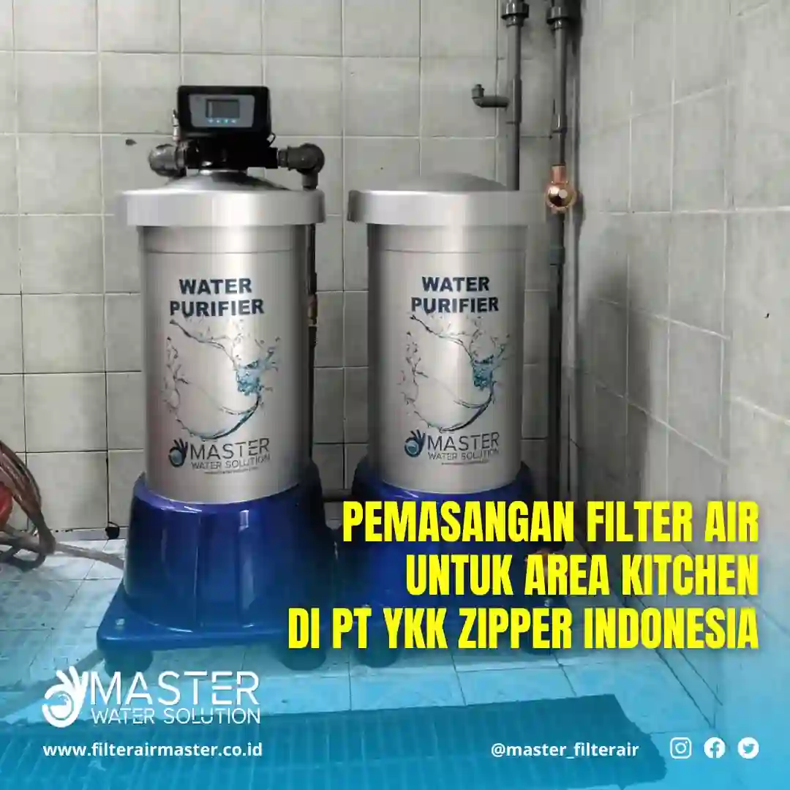

Penerapan Filter Air Master M300 di PT. YKK Zipper Indonesia
Filter air industri sangat penting untuk menjamin kualitas air yang digunakan di dapur perusahaan. PT. YKK Zipper Indonesia mempercayakan Master M300 sebagai solusi filtrasi air berkualitas untuk operasional dapur mereka di Cibitung.
Keunggulan Filter Air Master M300
- Teknologi Penyaringan Multilayer: Kombinasi media pasir silika, karbon aktif, dan manganese green sand.
- Material Aman: Menggunakan tangki fiber food grade yang cocok untuk kebutuhan dapur.
- Perawatan Praktis: Tersedia dalam versi manual dan otomatis untuk kemudahan pengguna.
- Skalabilitas Tinggi: Efektif untuk kebutuhan rumah tangga maupun industri skala kecil hingga menengah.
Lihat juga: Filter Air Rumah Tangga Master M300 Automatic
Studi Kasus: Penerapan Master M300 di PT. YKK Zipper Indonesia
Di lokasi Cibitung, PT. YKK menghadapi tantangan air sumur yang mengandung zat besi tinggi dan lumpur. Filter Master M300 Manual dipilih sebagai solusi efektif untuk menjaga kualitas air dapur mereka.
Langkah-Langkah Pemasangan
Proses diawali dengan survei lokasi, dilanjutkan dengan pemasangan unit oleh tim teknisi profesional. Dalam satu hari kerja, sistem berhasil terpasang dan langsung berfungsi menyaring air menjadi jernih dan bebas bau.
Master M300 Automatic dilengkapi dengan valve otomatis berbasis timer, memudahkan proses backwash secara berkala—ideal untuk pengguna yang mengutamakan efisiensi.
Spesifikasi Master M300 Automatic
| ITEM | TABUNG 1 (SAND FILTER) | TABUNG 2 (CARBON FILTER) |
|---|---|---|
| DIMENSI | 450 x 450 x 1101 mm | 450 x 450 x 943 mm |
| KAPASITAS | 30 Liter/menit | |
| MEDIA FILTER |
Chamotte Small 0.3–0.6 mm 11.2 Kg Chamotte Middle 0.6–1.18 mm 7 Kg Sand 3: 1 mm 11 Kg Sand 4: 3 mm 6 Kg |
Carbon Active Powder |
| JENIS VALVE | Valve Otomatis (Timer) | |
| UKURAN PIPA | 1 Inch / 25 mm | |
| BERAT | 34 kg | 29 kg |
Manfaat Filter Air bagi PT. YKK
- Menyediakan air bersih untuk kegiatan dapur dan sanitasi
- Melindungi peralatan dapur dari kerak dan korosi
- Meningkatkan kesehatan dan kenyamanan staf
Dokumentasi Pemasangan
Artikel Terkait
- Filter Air Industri untuk Lingkungan Kerja yang Lebih Sehat dan Produktif
- Filter Air Sumur yang Aman dan Efisien untuk Keluarga
- Pemasangan Filter Air Master M300 Automatic
Kesimpulan
Penerapan Filter Air Master M300 di PT. YKK Zipper Indonesia membuktikan keandalan solusi kami dalam memenuhi kebutuhan air bersih industri. Untuk informasi lebih lanjut, kunjungi halaman Kontak Kami.